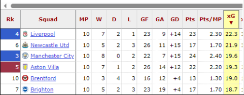

Figure 1 – Position of Brighton in attack - defenders located on the halfway line
Progressive carries are important as it would allow the team to go higher and higher up the pitch, which is what they aim for with a possession-based style focused on controlling the ball. This is key when identifying midfielders, as it would show who exceeds at bringing the ball high up the pitch and giving it to the forwards. As of writing, Brighton currently sit 6th for xG in the Premier League as Figure 2 shows, behind the likes of Liverpool and Manchester City. (FBRef, 2023)

Figure 2 - Brighton's performance on xG compared with other teams
When identifying attackers, a high xG would indicate an attacker can get into threatening positions to score. Brighton have a high xG, indicating their strikers get into menacing spaces, which would explain why they sit in a European qualifying position as of writing whilst averaging 2 goals a game. (Garratt-Stanley, 2022) Brighton like to apply pressure constantly throughout a match. Looking at pressures applied allows them to identify players for themselves. Identifying key metrics such as these and finding players for them allows Brighton to keep striking gold in the transfer market, which has allowed for seamless transitions between managers and has seen them progress into European competition. This is done alongside developing and selling players for high prices and profits, which the next section will cover.